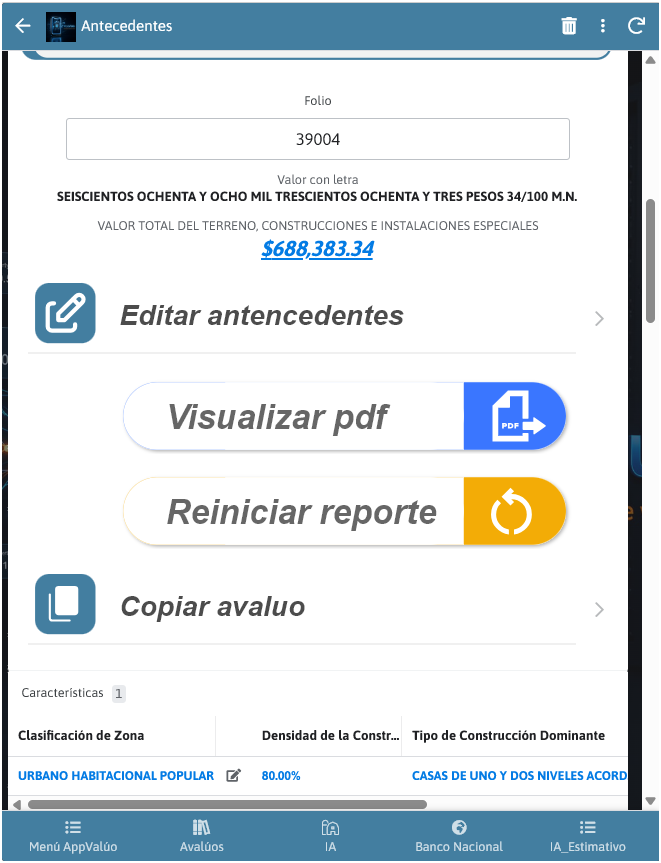
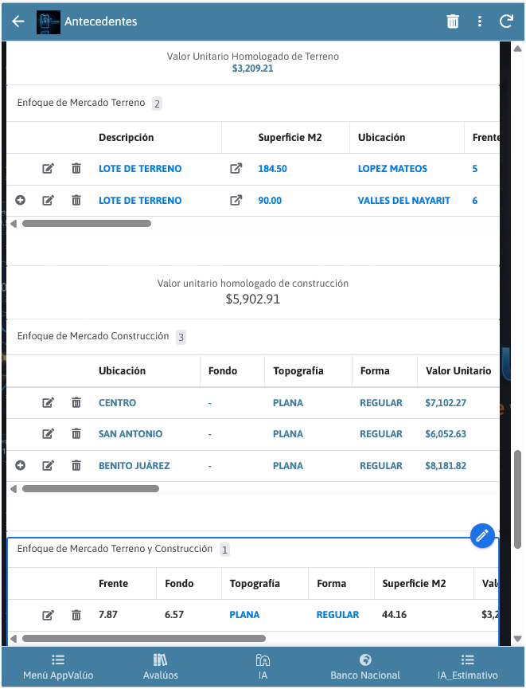
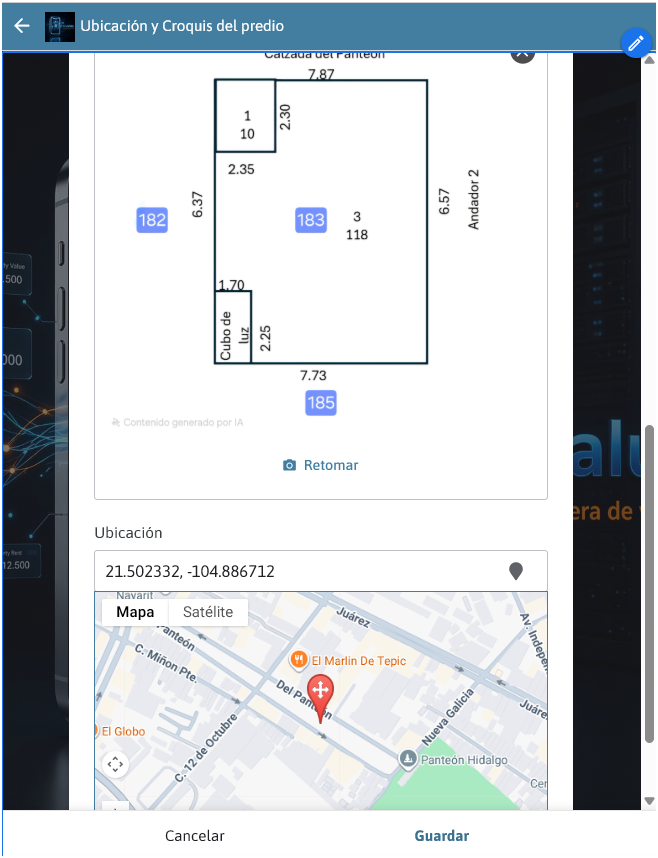

Captura técnica
Registra el inmueble, su contexto y la evidencia necesaria para iniciar cada expediente con claridad.
Ver el flujovaluación profesional · es-mx
Captura datos, interpreta el entorno y entrega dictámenes con un flujo más claro para valuadores, peritos y despachos inmobiliarios.
qué es AppValúo
AppValúo reúne captura, documentos, ubicación, referencias, revisión y conclusión en un flujo pensado para reducir retrabajos y elevar la calidad del dictamen.
Orden y control
Información estructurada, sin archivos sueltos y con trazabilidad.
Productividad
Menos captura repetida, más tiempo para análisis y decisiones.
Entrega profesional
Reportes consistentes, listos para impresión y presentación corporativa.
módulos principales
Una base de trabajo para llevar tu proceso de valuación de principio a fin sin depender de múltiples plantillas y herramientas dispersas.
Registra el inmueble, su contexto y la evidencia necesaria para iniciar cada expediente con claridad.
Ver el flujoLee la distribución geográfica de referencias, consulta sus señales y entiende el entorno antes de concluir.
Abrir el mapaOrganiza áreas, medidas y salidas listas para imprimir dentro del expediente.
Conocer másCentraliza el respaldo técnico y prepara una presentación más consistente para cada cliente.
Abrir la appexperiencia real AppValúo
Conoce algunas de las vistas que acompañan el trabajo diario del valuador: antecedentes, comparables, croquis y ubicación en un mismo flujo.



mapa dinámico AppValúo
El mapa dinámico convierte la información geográfica en una herramienta de análisis. Permite ubicar referencias, leer concentraciones de valor y contrastar el entorno desde una vista clara y operativa.

Define el alcance geográfico y revisa el estado, colonia, municipio o tipo de referencia que necesitas analizar.
Usa filtros rápidos, etiquetas y niveles de confianza para concentrarte en la información más útil para tu expediente.
Observa puntos, concentraciones y rangos de valor para contrastar el inmueble con su entorno inmediato.
Convierte la lectura del mapa en una decisión documentada dentro del flujo de trabajo de AppValúo.
cómo funciona
Captura rápida, análisis claro y una salida profesional para cada expediente.
Registra datos del inmueble y evidencia sin desorden.
Relaciona el inmueble con su entorno y referencias relevantes.
Contrasta información y sustenta tu valuación con mayor claridad.
Genera reportes listos para impresión y presentación.
tutoriales AppValúo
Explora las guías y descubre cómo llevar tu operación a la app.
contacto
¿Quieres implementar AppValúo en tu despacho? Escríbenos y te orientamos sobre los módulos adecuados para tu operación.